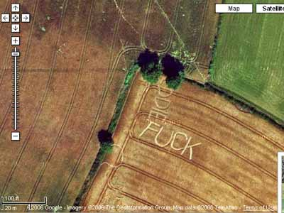

Multimedia Concert in support of Communication Options. Music_New Choreography_Film & Video with very special guest Omar. Saturday 2 Sept, 7pm, Shoreditch Church, £10 / £5 concessions. All proceeds go towards funding neuro-optometric rehabilitation for young people with neurological disorders.
#31 August 2006 | Comments (1)
Bikes overtaken - 12
Bikes overtaking me - 0
Mopeds overtaken - 1
An epic cut-and-thrust on the highway this morning. Spandex-clad Proper Cyclist with lock around waste and legs like nodding donkeys overtook me at high speed in Holborn and my pulse quickened. Prayers were answered when I realised we would be taking the same turning and so I initiated the slowest overtaking manoeuvre possible. I heard his innards exploding with muted rage at my insolence and within seconds he'd sped past me once again, at a higher speed than I'd admittedly anticipated. It took me longer than I'd hoped, but at a crucial turning moments later he slowed slightly to look for traffic I knew would be stopped by a red light and so I sped past once again, a grin of profound joy daubed across my face. I resisted the urge to banshee scream and instead held my left arm out as I took a left turn as slowly as humanly possible in front of his thwarted wheels.
#30 August 2006 | Comments (0)
Went to Hampstead yesterday for the first time in my life. The other half lives very well, don't worry. Anyway, they got hardly any pubs up there and the ones they do have are of the Wetherspoon (wine bar) variety.
Having dogded a few SUVs and Bentleys, we proceeded down to Belsize Park where we found some great Irish joints. The ashtrays were so old, the wipe marks of time had literally stripped the paint off of them.
Down the road from Belsize is the polar opposite Kentish Town. Pubs galore here, but akin to Deptford (i.e. Damp, Musty, Beer/Piss).
I couldn't wait to get back to my tried and trusted Marquis Of Cornwallis. See you soon Brian, mine's a Guiness. Y'all are invited.
#29 August 2006 | Comments (4)
Concrete and Clay debut mp3 from Dan the Automator, featuring Ghostface Killa.
dan_the_automator_feat_ghostface.mp3
5.18MB | Download | Stream
#28 August 2006 | Comments (0)
Concrete and Clay debut mp3 from New Brazilian Girls.
#28 August 2006 | Comments (1)
or... how best to use hay

#24 August 2006 | Comments (2)
This weekend sees the return of the annual Kings Cross rave up better known as TDK... On Saturday (5pm-5am) catch Hot Chip, Danny (Ha Ha) Clark, Bones (from our favourite DJ duo Bones and Ramsey), Shy Child, Young Blood Brass Band (12 piece orchestra playing hip-hop, funk, soul covers and their own stuff, magic !), The Bug (he is incredible...), Gucci Soundsystem and many more. Sunday sees Secret Sundaze, Scarlett Etienne, LosSoul, Greg Sonata and a whole bunch of people. Tickets are £20 or blag. See you there.
#24 August 2006 | Comments (2)
#22 August 2006 | Comments (1)
I am dog tired. Sure I've worked hard before; teaching 30 disinterested, dysfunctional schoolboys ain't a piece of cake I can tell you, but today was something else. It's the school holidays so I thought I'd get myself a little project (6 weeks can get a bit boring, you know).
I was sent an email about a group of film makers who wanted to give something back to the community so they set up Film for Humanity and invited 14 young film makers to come along and make some films to commemorate the 70th anniversary of the Battle of Cable Street.
Now family legend has it that my grandfather Sam was at Cable Street and took out a few fascists himself (Ok I may have embellished the last part, but hey, indulge me), so of course I was interested.
#21 August 2006 | Comments (0)
Bikes overtaken - 27
Bikes overtaking me - 1
After a record overtaking spree en route this morning, I decided no longer to count as overtaken the oblivious helmeted at red lights who see nothing more of me than a blur as I speed past into the beyond. Overtaking other cycles is a complicated process that I can compare only to fishing. The sighting of a target, the assesment of their roadworthiness, the voice in the head, 'This is Nancy at Chase HQ', the inexorable reeling in of what was once in front. This process is short-circuited by the non-movement of the near-stationary, and like a cat pawing a young mouse I can no longer truly classify the movement as an overtaking. As I pondered this, yet another courier with lock around waste sped past me at Farringdon, and though I ferociously moved to redress the imbalance, the hill towards Holborn stymied my progress. Compassion is foolhardy on these roads.
#17 August 2006 | Comments (5)
{kind=link}